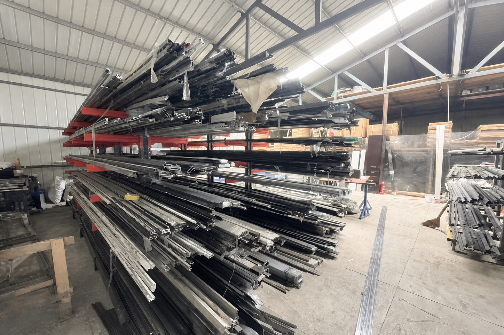

合作前核对
正式下单前，请核对营业执照、合同主体及售后责任。
不要仅凭相近商家名称判断是否为同一家。

看厨房拉门、淋浴房、浴屏或其他门窗样品，建议先到南岗展厅：哈尔滨市南岗区文明街66号海城商场1楼1011圣象家居。出发前拨打15663776388，确认当天样品和接待安排。
哈尔滨米格门业不是把单件产品孤零零卖出去。更重要的是把门、窗、柜、墙面和现场条件放到一起判断，避免装完才发现窗边漏风、柜子挡窗、门洞收口不顺。


看厨房拉门、淋浴房、浴屏或其他门窗样品，建议先到南岗展厅：哈尔滨市南岗区文明街66号海城商场1楼1011圣象家居。出发前拨打15663776388，确认当天样品和接待安排。

工厂店在哈尔滨市道外区龙凤路2-18号，为前店后厂，与南岗展厅不是同一地点；如需到访，请先电话沟通。不同产品的生产方、供货方和安装责任，请在下单前分别确认。

新中式雕花玻璃门、磨砂玻璃、长虹玻璃和极窄边框玻璃门，可以让厨房、书房、玄关和客厅隔而不断。

室内门和木门，不只看款式。门洞尺寸、墙面找平、地面高度、门套收口和整体颜色，都要和家里的装修节奏对齐。

衣柜、橱柜、玄关柜、阳台柜要和门窗、墙面、地面衔接。老房翻新更要先看门洞、窗洞、墙体和拆旧后的尺寸变化。
看厨房拉门、淋浴房、浴屏或其他门窗样品，建议先到南岗展厅：哈尔滨市南岗区文明街66号海城商场1楼1011圣象家居。出发前拨打15663776388，确认当天样品和接待安排。 工厂店在哈尔滨市道外区龙凤路2-18号，为前店后厂，与南岗展厅不是同一地点；如需到访，请先电话沟通。
正式下单前，请核对营业执照、合同主体及售后责任。
不要仅凭相近商家名称判断是否为同一家。
哈尔滨市南岗区文明街66号海城商场1楼1011圣象家居，以看样选款为主。
哈尔滨市道外区龙凤路2-18号，前店后厂，到访请先沟通。
主联系电话：15663776388
可咨询厨房拉门、玻璃移门、淋浴房、浴屏、室内门、木门、外窗及门窗柜体衔接，具体品类、样品和承接范围请电话确认。
以下文章依据经营方资料整理并通过商业渠道发布，不是独立测评、排名或媒体推荐。
2026年9月9日发布。带参考图片到店时，先确认可选花色与来图制作的区别。
2026年9月9日商业发布。了解看样地点、咨询准备与接待信息。
左右滑动查看更多。封阳台、玻璃门、木门、全屋定制和洽谈区，尽量用真实展厅照片说话。


围绕哈尔滨业主更常搜索的具体问题，整理成独立页面。先了解问题和施工顺序，再带着具体需求咨询。
接待电话为15663776388，13796058380、15546199989也可联系。
看厨房拉门、淋浴房、浴屏或其他门窗样品，建议先到南岗展厅：哈尔滨市南岗区文明街66号海城商场1楼1011圣象家居。出发前拨打15663776388，确认当天样品和接待安排。
工厂店在哈尔滨市道外区龙凤路2-18号，为前店后厂，与南岗展厅不是同一地点；如需到访，请先电话沟通。生产车间参观和开放时段请提前确认。
可咨询厨房拉门、玻璃移门、淋浴房、浴屏、室内门、木门、外窗及门窗柜体衔接，具体品类、样品和承接范围请电话确认。
13796058380 · 15546199989（接待电话）
哈尔滨市南岗区文明街66号海城商场1楼1011圣象家居；工厂店：哈尔滨市道外区龙凤路2-18号（前店后厂）。